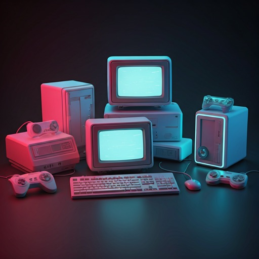
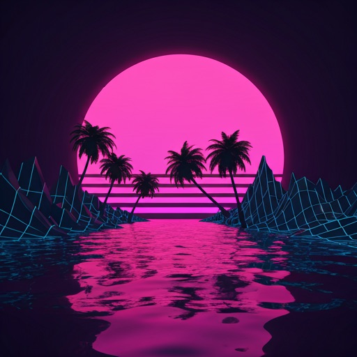
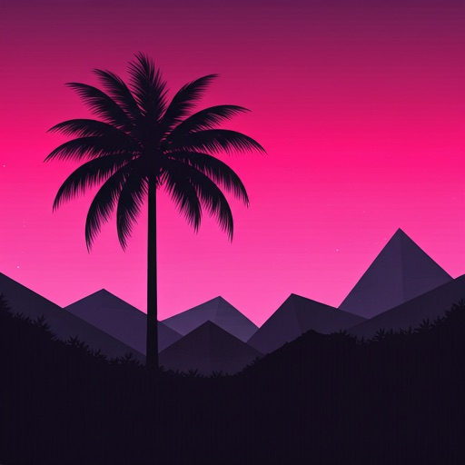

AESTHETIC MEMORY
Experience the digital decay of the 20th century. A curated archive of marble, neon, and late-night television glitches.
Digital Artifacts
Browse our high-fidelity lo-fi collection.

Retro Hardware Cycle
Silicon dreams of a future that never was. Re-examine the aesthetics of 90s computing power.
Glitch Architecture
Deconstructed urban landscapes in lavender.

Tropical Silhouette
Palms.exe

>> BOOTING ARCHIVE SESSION...
Memory address: 0x84A22F
Scanning sectors for aesthetic fragments...
Fragment found: [MARBLE_STATUE_01]
Fragment found: [VHS_NOISE_LOOP]
Fragment found: [CITY_POP_CHORD]
WARNING: Nostalgia levels exceeding safe limits.
_
Dream Core
Please wait while we recalibrate your reality. This process may take several decades.
Subscribe to the Drift
Receive weekly transmissions from the aesthetic underground. Direct to your terminal.